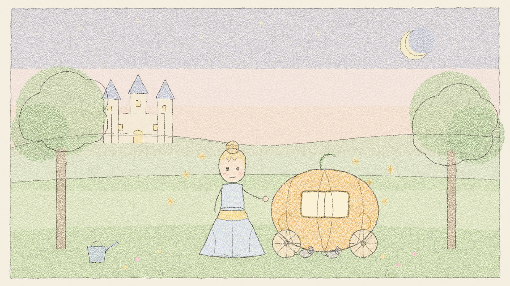

Cinderella: Bedtime Story for Kids, Our Retelling (after Perrault)
Our own gentle bedtime retelling of Cinderella, after Charles Perrault's public-domain tale in Andrew Lang's translation. Soft music plays between the scenes. In this episode: - A kind girl, a fairy godmother, a pumpkin coach and a glass slipper that fits just right. - It ends with forgiveness and a quiet goodnight: being kind is the best magic of all. Sources: Cinderella; or, The Little Glass Slipper Music: Kevin MacLeod (incompetech.com), CC BY 4.0 Gentle stories for bedtime and story time, told slowly by a warm narrator. luongnv.com/podcast/stories
Listen on Once Upon a Time Show Download MP3 Transcript
Also in: Français, Tiếng Việt
Based on Cinderella; or, The Little Glass Slipper
Transcript
Selene: Welcome to Once Upon a Time Show. It's time for a bedtime story. Hello, little one. Snuggle down under your blanket. Make your pillow soft. Take a slow breath in, and a slow breath out. Good. Tonight's story is a very old one. It was told in France a long, long time ago. It's about a kind girl called Cinderella, a little glass shoe, and a clock that goes tick, tock. Once upon a time, there was a girl with the kindest heart in the whole land. She lived in a big house with her new stepmother and two older sisters. The sisters had fine rooms and big mirrors. But the girl had a small bed of straw, up under the roof. All day she swept the floors and washed the dishes.
When her work was done, she sat by the fire, in the warm ashes. Ashes are the soft gray dust a fire leaves behind. So the family called her Cinderella. And she was always gentle and good. One day, a letter came from the palace. The king's son was having a ball. A ball is a big, happy party, with music and dancing. And the two sisters were asked to come. The sisters talked about dresses all day long. Red velvet, said one. A cloak with gold flowers, said the other. Cinderella helped them with their hair. She did it beautifully, because she was kind. Then the sisters rode away to the palace. Cinderella watched them go, until she couldn't see them anymore. And then, she began to cry.
But someone saw her tears. It was her fairy godmother. She was a real fairy, with a magic wand. You wish you could go to the ball, she said softly. Yes, said Cinderella. Then go into the garden, said the fairy, and bring me a pumpkin. Cinderella found the biggest, roundest pumpkin. The fairy tapped it with her wand. And the pumpkin became a golden coach. Next, six little mice became six gray horses. A rat with long whiskers became a jolly coachman. And six little lizards from behind the watering can became six footmen in gold and silver. Then the fairy touched Cinderella's old clothes. They turned into a dress of gold and silver, with shining jewels. Last of all, she gave her a pair of glass slippers. They were the prettiest in the whole world.
But listen, said the fairy. You must come home before midnight. At midnight, the magic stops. The coach will be a pumpkin again, and your dress will be your old clothes. Cinderella promised. At the palace, the prince ran out to meet her. He took her hand and led her inside. The music stopped. Everyone was quiet. Then they all whispered, how lovely she is. Cinderella danced with the prince. She danced so lightly, like a leaf on the wind. She even sat with her sisters and shared her oranges with them. They didn't know who she was. Then the clock went tick, tock. It was nearly midnight. Cinderella said a quick goodbye and hurried home, just in time. And the prince asked her to come again the next night.
The next night, Cinderella went back to the ball. She was so happy that she forgot the time. Tick, tock. Then the clock began to ring for midnight. Cinderella jumped up and ran, as quick as a deer. On the stairs, one little glass slipper fell from her foot. The prince picked it up, very carefully. By the time she got home, her dress was her old clothes again. A few days later, a trumpet sounded through the town. The prince would marry the girl whose foot fit the glass slipper. So the slipper went from house to house. The sisters pushed and pushed, but their feet wouldn't fit. Then Cinderella smiled. Let me try, she said. And the slipper slid on, as easy as anything. It fit her just right.
Then Cinderella took the other slipper out of her pocket, and put it on too. And there was the fairy again. With one tap of her wand, Cinderella's dress was more lovely than ever. Now the sisters knew. They said sorry for being so unkind. And Cinderella gave them a big hug. I forgive you, with all my heart, she said. I want us always to love each other. Soon, Cinderella and the prince were married. And because she was as kind as she was lovely, she gave her sisters a home in the palace too. Everyone was happy at last. And now, the palace is quiet. The music is soft and slow. The golden coach is a pumpkin again, resting in the garden. The six little mice are curled up in a warm, round nest.
The clock goes tick, tock, slow and soft. Cinderella takes off her glass slippers and sets them by the window. The moon makes them shine. She closes her eyes, and so can you. Remember what the story says. Being kind is the best magic of all. Sleep tight, little one. Goodnight from Once Upon a Time Show. Sweet dreams.